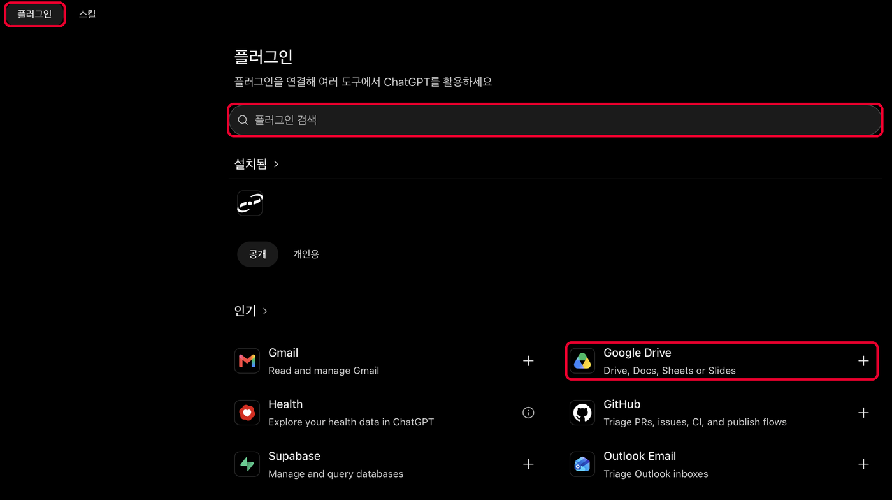
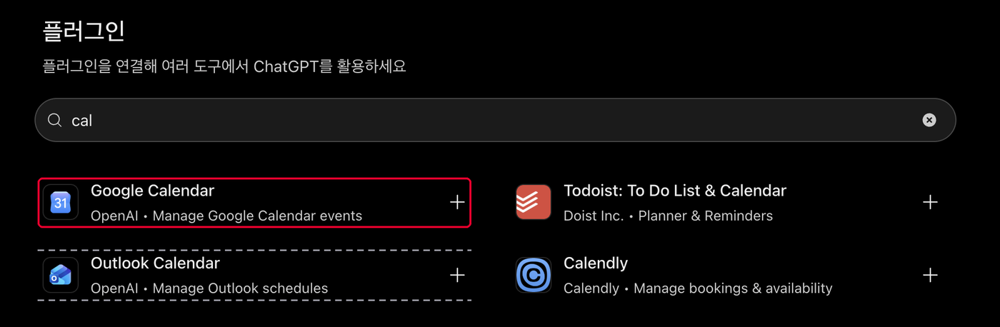
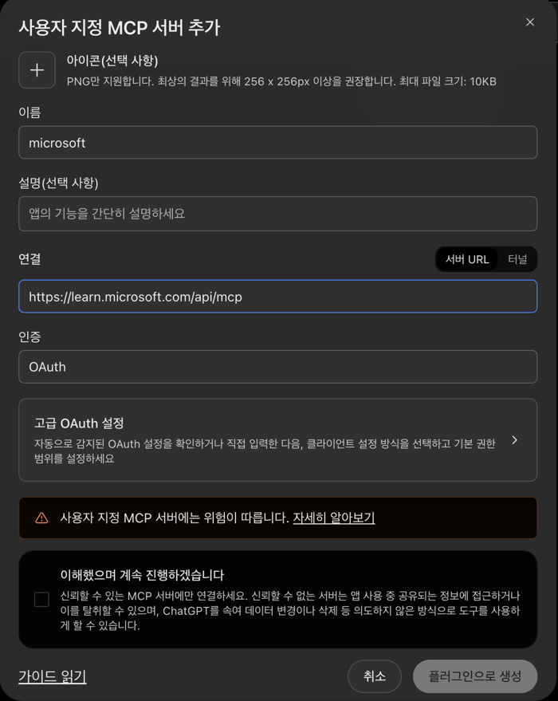

반복 문서 업무,
스킬로 만들기
같은 설명을 매번 반복하던 문서 업무를 스킬로 저장하고, 한 문장으로 초안을 받는 과정
오늘의 결과물
시트 · 캘린더 연결
ChatGPT가 구글 시트 · 캘린더를 직접 조회
공통 지침 1건
주간 업무 보고 · 저장하고 다시 불러오기까지
경비 집계 스킬 1개
한 문장으로 월별 경비 집계
검증 체크리스트 1장
AI 답변 확인 항목
나만의 스킬 1개
내 업무를 질문에 답하며 스킬로
진행 순서
| 블록 | 실습 | 결과 |
|---|---|---|
| 01 채팅을 넘어: 에이전트와 플러그인 | 시트 · 캘린더 연결 · 플러그인 만들기 | 이번 주 요약 · 내 플러그인 |
| 02 반복 문서 업무 구조화 | 지침 전후 비교 | 공통 지침 1건 |
| 03 담당 업무 스킬 제작 · 연동 | 경비 집계 스킬 | 스킬 1개 · 체크리스트 |
| 04 나만의 스킬 만들기 | 내 업무로 스킬 | 나만의 스킬 1개 |
실습 준비
다른 툴을 쓰는 경우
- Claude · Gemini도 같은 표준(스킬 · MCP)을 따름
- 오늘은 ChatGPT 화면 기준으로 진행
- 막히면 튜터에게 요청
실습 자료 받기
정보 취급 기준
| 기준 | |
|---|---|
| 데이터 | 실습용 더미만 · 회사 실데이터 입력 금지 |
| 계정 연동 | 개인 Google 계정 · 실습용 시트와 캘린더만 연결 |
| 실습 후 | 원하면 연결 해제 · 「실습용 팀 일정」 캘린더 삭제 |
| 회사 계정 | Outlook · SharePoint 등 회사 계정 연결은 사내 승인 후 · 오늘은 개인 Google 계정으로 |
| 메일 발송 | 실습 중 받는 사람은 본인 주소만 · 확인 창에서 받는 사람 확인 |
| 결과물 | AI 결과는 초안 · 최종 확인과 책임은 작성자 |
채팅을 넘어:
에이전트와 플러그인
AI가 시트를 읽고 보고서를 쓰는 원리
AI 사용자가 느낀 변화
대화형에서 위임형으로
- 아는 범위에서 글로 답함
- 자료를 찾거나 파일을 만들지 못함
자료 찾기 · 표 · 차트 · 보고서를 직접
- 웹 검색을 여러 번 · 숫자 확인
- 표로 정리 → HTML 작성 · 미리보기
- 부족하면 다시 찾기
목표를 정하고 결과를 확인
위임이 가능해진 이유: 스스로 도구 사용
도구 없는 AI
- 다음 글자를 확률로 이어 쓰기만
- 계산 · 최신 정보 · 파일 · 메일 불가
- 결과를 사람이 옮겨서 실행
도구를 쓰는 AI
- 필요할 때 도구를 스스로 골라 호출
- 도구 결과를 읽고 다음 행동 결정
- 여러 단계를 이어서 끝까지
무어의 법칙처럼 늘어나는 AI 작업 길이
에이전트를 이루는 네 가지
외부 자료 조회
업무 매뉴얼
참고자료
채팅에서 에이전트로
오늘 다루는 것
AI가 숫자를 쓰는 방식
- 다음 글자를 확률로 골라 이어 붙임
- 숫자도 계산이 아니라 그럴듯한 다음 글자로
- 0.31 vs 0.29 · 근소한 차이로 틀린 쪽 선택
- 틀려도 같은 말투 · 스스로 확인하는 단계 없음
도구가 있으면
4817 * 293 → 1411381
| AI 혼자 못 하는 것 | 이유 | 붙이는 도구 |
|---|---|---|
| 정확한 계산 | 숫자를 확률로 이어 씀 | 코드 실행 (파일 분석) |
| 오늘의 정보 | 학습한 시점 이후를 모름 | 웹 검색 |
| 내 자료 | 본 적 없는 시트 · 일정 | 앱 연결 (Drive · Calendar) |
| 실제 행동 | 글자만 만들 수 있음 | 메일 · 일정 등록 도구 |
에이전트가 쓰는 도구 세 종류
| 종류 | 예 | 연결 방법 |
|---|---|---|
| 기본 도구 | 웹 검색 · 파일 분석(코드 실행) · 이미지 생성 | 켜져 있음 · 입력창 +에서 선택 |
| 앱 연결 | Google Drive · Calendar · Gmail · Notion · Slack | 로그인 한 번 · 허용한 범위만 조회 |
| MCP 서버 | 공공 통계 · 공시 · 법령 · 사내 시스템 | 주소 등록 · 공개 서버 또는 직접 만든 서버 |
시트를 읽는 원리
직접 만든 도구 예
| 유형 | 다른 현장 과정에서 만든 도구 | 재보험 업무라면 |
|---|---|---|
| 조회 | 설비 생산량 · 불량 조회 (철강) · Lot 이력 · 정비 기록 조회 (반도체) | 계약 · 출재 조건 조회 |
| 계산 | 근무조별 불량률 · 정확한 계산기 (철강) | 손해율 · 보유 · 출재 비율 계산 |
| 문서 검색 | 사내 규정 검색 · 조항 원문 추적 (철강) · 기술 문서 검색 서버 (반도체) | 약관 · 특약 조항 검색 |
| 기록 | 메모 조회 · 저장 · 수정 · 삭제 (반도체) | 업무 일지 · 회의 결정 기록 |
| 판정 · 넘기기 | 이상 이벤트 판정 → 조사 (반도체) · 규정에 없으면 담당자에게 (철강) | 심사 필요 건 분류 · 승인 요청 |
| 안전장치 | 운영 DB 쓰기 차단 (철강) | 원본 데이터 수정 차단 |
MCP가 필요한 이유
MCP 한눈에 보기
= MCP 클라이언트
| 순서 | AI 앱 → MCP 서버 | MCP 서버 → AI 앱 |
|---|---|---|
| ① 목록 | 「어떤 도구가 있어?」 | 통계 검색 · 통계표 조회 |
| ② 호출 | 「통계표 조회 · 자연재해 피해 · 2024」 | 서비스에서 값을 가져옴 |
| ③ 결과 | — | 표 데이터 → AI가 답변 작성 |
가져다 쓰는 외부 도구 · MCP 서버
| 분야 | 서버 | 재보험 업무에서 |
|---|---|---|
| 국가통계 | korea-stats-mcp (KOSIS) | 재해 · 인구 · 산업 통계로 위험 추이 |
| 기업 공시 | DART-mcp-server | 원수사 · 경쟁사 공시 · 재무 정보 |
| 법령 | korean-law-mcp | 보험업법 · 시행령 · 행정규칙 조회 |
| 공공데이터 | data-go-mcp-servers | 공공데이터포털의 여러 API를 도구로 |
| 기술 문서 | Microsoft Learn MCP | 엑셀 · 파워포인트 · 스크립트 사용법 |
연결 표준 MCP
잇는 공통 규격
Anthropic · OpenAI · Block 공동 설립
공개 서버 1만 개 이상
대화창 지시와 저장된 지침
4항목 · 마감 초과 맨 위 · 추정 금지
스킬이 호출되는 원리
플러그인 = 스킬 + MCP 서버
세 회사의 공통 스킬 표준
| 발표 | 내용 | |
|---|---|---|
| Anthropic · Claude | 2025.10 발표 · 2025.12 오픈 표준 | Agent Skills · SKILL.md 공개 (agentskills.io) |
| OpenAI · ChatGPT | 2026.07 플러그인 디렉터리 | 스킬 · MCP 서버를 플러그인으로 묶어 설치 |
| Google · Gemini | 2026.09 발표 · 10월 배포 시작 | 「SKILL.md 표준」 기반 스킬 · Gem은 스킬로 자동 이전 |
플러그인 연결하고 직접 만들기
Google Drive · Calendar 플러그인으로 시트와 일정을 함께 읽고, MCP 서버 주소로 내 플러그인도 직접 만들기
- 시트 사본 만들기
- 캘린더 파일 가져오기
- ChatGPT에서 Google Drive · Calendar 연결
- 요청문으로 이번 주 요약 · 대조
- MCP 서버로 플러그인 직접 만들기
① 실습 자료를 내 구글 계정으로
시트 사본 만들기
자료 링크의 「팀 업무 현황」 열기 → 파일 → 사본 만들기
캘린더 만들기
Google 캘린더 → 설정 → 새 캘린더 → 「실습용 팀 일정」
일정 가져오기
설정 → 가져오기 → 실습용_팀일정.ics → 대상 「실습용 팀 일정」
| A | B | C | D | E | |
|---|---|---|---|---|---|
| 1 | 업무명 | 담당 | 마감일 | 진행률 | 비고 |
| 2 | 사내 교육 일정 확정 | 김서연 | 10/24 | 90 | 강사 1명 회신 대기 |
| 3 | 3분기 비용 집계 | 이준호 | 10/27 | 100 | |
| 4 | 자료 보관 기준 정비 | 박지민 | 10/29 | 부서 협의 중 | |
| 5 | 협력사 명단 갱신 | 최유진 | 10/30 | 60 |
② ChatGPT에 Google 연결
플러그인 열기
왼쪽 메뉴 → 플러그인
Google Drive 연결
Google Drive (Drive · Docs · Sheets) + → Google 로그인 · 권한 허용
Google Calendar 연결
검색창에 「cal」 → 다음 장
확인
설치됨에 두 플러그인 표시

③ Google Calendar 연결
검색
플러그인 검색창에 cal
Google Calendar
+ → Google 로그인 · 권한 허용
확인
설치됨에 Google Drive · Google Calendar

④ 요청문으로 이번 주 요약 받기
내 구글 드라이브의 「팀 업무 현황」 시트와 구글 캘린더의 「실습용 팀 일정」을 읽고
이번 주 팀 현황을 요약해 줘.
- 업무별 진행률과 마감일
- 이번 주 회의 · 마감 일정
- 마감이 지났거나 이번 주 마감인데 진행률이 낮은 업무결과 확인 포인트
잘 된 결과
- 시트 12건이 빠짐없이
- 캘린더 일정 10건 반영
- 마감 지난 업무를 따로 표시
- 시트에 없는 내용은 없음
다시 볼 결과
- 업무 수가 시트와 다름
- 날짜를 다르게 읽음
- 「아마 ~일 것」 같은 추정
- → 원문과 대조 · 다시 요청
⑤ 기존 MCP 서버로 플러그인 만들기
추가 화면 열기
플러그인 화면 → 사용자 지정 MCP 서버 추가 · 안 보이면 설정 → 앱 → 고급에서 개발자 모드 켜기
이름 · 연결
이름 microsoft · 서버 URLhttps://learn.microsoft.com/api/mcp
Microsoft 공식 문서를 찾는 공개 서버
인증
로그인이 필요 없는 공개 서버 · 목록에 없음이 있으면 선택
생성
「이해했으며 계속 진행하겠습니다」 체크 → 플러그인으로 생성

⑥ 만든 플러그인으로 질문하기
Microsoft Learn에서 Excel XLOOKUP 함수 사용법을 찾아 줘.
사번으로 이름을 찾는 예제 수식 1개와 인수 설명, 참고한 문서 링크를 함께 알려 줘.| 볼 곳 | 보일 것 |
|---|---|
| 답변 위 도구 표시 | microsoft의 문서 검색 도구를 부름 |
| 답변의 링크 | learn.microsoft.com 문서 주소 |
| 예제 | XLOOKUP 수식 1개 · 인수 설명 |
| 연결 끄고 같은 질문 | 도구 표시 없음 · 링크가 없거나 일반 웹 출처 |
반복 문서 업무 구조화
매번 길게 설명하던 업무를 지침 · 참고자료 · 출력 예시 세 가지로 나누기
매주 반복하는 설명
업무를 3요소로 나누기
항목 · 순서 · 금지 사항
「이 양식에 맞춰라」
「이 정도로 써라」
스킬이란: 저장해 두는 업무 지침
- 이름 · 설명 · 지침 · 참고 파일
- 설명을 보고 자동 호출
- 여러 스킬을 함께 사용
지침은 규칙 목록이 아니라 판단 기준
진행률이 없으면 0%로 써.
표는 5열로 만들어.
→ 예외 상황에서 잘못된 답
판단: 마감 · 진행률로 위험한 업무부터 구분
모를 때: 기록에 없으면 추정하지 말고 「확인 요청」
→ 예외 상황도 같은 기준으로 처리
지침은 호출할 때마다 적용
- 지침 품질 = 결과 품질
- 한 번 고치면 다음부터 계속 반영
참고 파일의 역할
- 양식 · 예시 · 기준을 보면서 작성
- 숫자는 내가 준 자료에서만
지침 적용 전후 비교
같은 자료로 ① 지침 없이 ② 지침을 넣고 요청해 결과 차이를 직접 확인
- 지침 없이 한 줄 요청
- 결과 메모
- 지침 붙여 넣고 같은 요청
- 차이 비교
- 양식대로 안 나온 부분은 지침 문장 고치기
① 지침 없이 요청
「팀 업무 현황」 시트와 「실습용 팀 일정」 캘린더로 이번 주 주간 업무 보고 써 줘.② 지침을 넣고 요청
# 주간업무보고 지침
## 입력
- 「팀 업무 현황」 시트: 업무명 · 담당 · 마감일 · 진행률 · 비고
- 「실습용 팀 일정」 캘린더: 이번 주 일정
## 작성 규칙
1. 업무마다 [업무명 · 담당 · 진행률 · 다음 조치] 4항목으로 쓴다
2. 마감일이 지난 업무는 맨 위에 두고 「마감 N일 초과」를 붙인다
3. 진행률이 비어 있으면 추정하지 않고 「확인 요청」으로 쓴다
4. 시트와 일정에 없는 내용은 만들지 않는다
## 출력 형식
- 첫 줄: 이번 주 요약 한 문장
- 표: 업무명 | 담당 | 진행률 | 다음 조치 | 비고
- 마지막: 이번 주 주요 일정 목록 (날짜순)
- 참고자료 「작성예시」의 문체를 따른다- 새 대화에서 지침 전체를 붙여 넣고
- 참고자료 주간보고_양식.docx · 작성예시.docx 첨부
- 마지막 줄에 「이번 주 보고서 써 줘」
지침 적용 전후 비교
지침이 적용되지 않을 때
| 증상 | 고치는 법 |
|---|---|
| 규칙 하나를 계속 빠뜨림 | 그 문장을 맨 앞으로 · 번호 붙이기 |
| 「적당히」 처리 | 숫자 · 이름으로 구체적으로 (「3줄 이내」 「맨 위」) |
| 금지한 행동 반복 | 「하지 마」 대신 대신 할 일을 함께 (「추정 대신 확인 요청」) |
| 양식이 흐트러짐 | 출력 예시 한 건을 참고자료로 추가 |
지침을 스킬로 저장
새 대화에서 요청
「이 지침으로 주간업무보고 스킬을 만들어 줘」 + 고친 지침 · 양식 · 작성예시 첨부
skill-creator
ChatGPT 기본 스킬이 자동으로 쓰여 SKILL.md 초안을 만듦
초안 확인
이름 · 설명(description) · 지침 · 참고 파일
Install
초안 창 Install → 내 스킬에 추가 · 프로필 → Skills에서 확인
스킬 구성 4칸
| 칸 | 역할 | 예 |
|---|---|---|
| 이름 | 스킬을 부르는 이름 | 주간업무보고 |
| 설명 | 언제 쓸지 · 호출 조건 | 주간 업무 보고서 · 이번 주 업무 정리를 요청할 때 |
| 지침 | 작성 규칙 · 판단 기준 | 4항목 · 마감 초과 맨 위 · 추정 금지 |
| 참고 파일 | 양식 · 예시 | 주간보고_양식 · 작성예시 |
담당 업무 스킬 제작 · 연동
내 반복 업무를 스킬로 만들고, 새 대화에서 한 문장으로 초안까지
내 업무 고르기
스킬로 만들기 좋은 업무
- 매주 · 매월 반복
- 입력 자료가 정해져 있음 (시트 · 메일 · 메모)
- 결과 양식이 정해져 있음
- 설명을 매번 다시 하고 있음
→ 항목별 합계 · 초과
→ 결정 · 담당 · 기한
→ 마감 · 지연 건
첫 스킬 추천: 업무 메일
말투를 지정하는 항목
| 항목 | 예시 |
|---|---|
| 호칭 | 팀장님 · 담당자님 |
| 첫인사 | 안녕하세요, 총무팀 김서연입니다. |
| 문장 | 한 단락 두 문장 이내 · 용건 먼저 |
| 맺음 | 감사합니다. 김서연 드림 |
| 피할 표현 | 과한 사과 · 「확정」 「무조건」 |
메일 스킬 지침
---
name: 업무메일
description: 받는 사람과 요점 몇 줄을 주면 내 말투로 업무 메일 초안을 쓸 때
---
목표: 내가 직접 쓴 것처럼 읽히는 메일
말투: 참고 파일의 내 메일에서 호칭 · 인사 · 문장 길이 · 맺음말을 따름
구성: 제목 / 인사 / 용건 / 요청 · 다음 일정 / 맺음
규칙: 요점에 없는 약속 · 숫자는 쓰지 않음, 필요하면 [확인 필요]
모를 때: 받는 사람 · 목적이 불분명하면 먼저 질문
참고: 내가 보낸 메일 3~5통- 말투: 예시 메일에서 배움
- 구성: 매번 같은 순서
- 규칙: 없는 약속은 쓰지 않음
- 모를 때: 먼저 질문
요점 세 줄로 메일 작성
- 10/24 회의실 공사 일정 확인 감사
- 공사 기간 중 7층 회의실 대체 장소 요청
- 10/28(화)까지 회신 부탁
담당자님, 안녕하세요. 총무팀 김서연입니다.
10/24 공사 일정을 알려 주셔서 감사합니다.
공사 기간 중 사용할 대체 회의실을 요청드립니다.
10/28(화)까지 회신 부탁드립니다.
감사합니다. 김서연 드림
경비 집계 스킬 만들기
경비 내역 파일로 경비 집계 스킬을 만들고, 새 대화에서 「10월 경비 집계해 줘」 한 문장으로 정답과 대조
- 경비_내역.xlsx 첨부 · 대화로 스킬 만들기
- 설명문 다듬기
- 검증 문장 넣기
- 새 대화에서 「10월 경비 집계해 줘」
- 정답과 대조 → 지침 고쳐 저장
① 대화로 스킬 만들기
경비 집계 스킬을 만들어 줘. 모르는 부분은 나에게 하나씩 물어봐 줘.
- 업무: 매월 초 부서 경비 집계 보고
- 입력: 첨부한 경비_내역.xlsx (「경비 내역」 · 「월 예산」 시트)
- 규칙: 사용일이 해당 월인 행만 · 항목별 합계와 예산 대비 % · 예산을 넘은 항목은 맨 위에 「초과」
- 출력: 요약 한 줄 + 표(항목 · 사용액 · 예산 · 비율) + 초과 항목 설명
- 하지 말 것: 시트에 없는 금액 만들기 · 다른 달 사용분 섞기
- 부를 때 쓸 말: 「10월 경비 집계해 줘」- 실습 자료 「예시3종 / 경비_내역.xlsx」 첨부
- 새 대화에 요청문 붙여 넣기 → skill-creator가 자동으로 초안 작성
- 되묻는 질문에 답하기
- 초안 창에서 지침을 읽고 Install
② 경비 파일 살펴보기
10월 25건 + 9월 5건 섞임
교통비 200,000원 등
회의비 · 교육비 초과
③ 설명문 작성: 호출 조건
호출이 안 되는 설명
- 「경비 도우미」
- 「회계 관련 스킬」
- → 언제 부를지 불분명
호출이 잘 되는 설명
- 「월별 부서 경비 집계를 요청할 때. 경비 내역 시트에서 해당 월 사용분만 항목별로 합산해 예산 대비 %와 초과 항목을 표로」
- → 언제 · 무엇으로 · 어떻게
④ 검증 문장 넣기
## 결과 검증
- 숫자 · 날짜 · 이름마다 어느 시트 · 일정 · 파일에서 왔는지 괄호로 표시한다
- 입력에 없는 내용은 쓰지 않고 「확인 요청」으로 남긴다
- 마지막에 「검증 메모」를 붙인다: 입력 건수와 결과 건수 · 확인이 필요한 항목 · 기준 날짜출처 표기
숫자마다 어디서 왔는지
교차 검증
입력 건수 = 결과 건수
최신성
기준 날짜 · 오래된 자료 표시
⑤ 새 대화에서 한 문장으로 호출
10월 사용 25건 · 합계 757,100원 · 예산 초과 2개 항목
검증 메모: 입력 30건 중 10월 25건 · 9월 사용 5건 제외
⑥ 검수 후 지침 수정
세 가지 입력으로 테스트
- 10월: 정상 집계
- 9월: 다른 달만 따로
- 11월: 사용 내역이 없는 달
입력별 기대 결과
| 요청 | 맞는 답 | 확인할 점 |
|---|---|---|
| 「10월 경비 집계해 줘」 | 25건 · 757,100원 · 회의비 194% · 교육비 126% 초과 | 9월 5건이 빠졌는지 |
| 「9월 경비 집계해 줘」 | 5건 · 299,000원 · 교통비 263,000원 132% 초과 | 10월 사용분이 섞이지 않았는지 |
| 「11월 경비 집계해 줘」 | 「11월 사용 내역 없음」 | 금액을 만들어 내지 않는지 |
지침 한 줄 추가 전후
→ 190% 「초과」
9월 28 · 30일 KTX 3건까지 합산
교통비 117,500원 / 200,000원
→ 59% · 초과 아님
스킬 조합
AI는 모르는 내용도 그럴듯하게 작성
- 자료에 없는 빈칸을 추측으로 채움
- 그래서 건수 · 숫자 · 출처를 대조
AI 답변 검증 체크리스트
| # | 확인 | 방법 |
|---|---|---|
| 1 | 건수가 입력과 같은가 | 시트 행 수 · 일정 수와 비교 |
| 2 | 숫자 · 날짜가 원문과 같은가 | 무작위 3개 골라 대조 |
| 3 | 없는 내용을 만들지 않았나 | 출처 표시가 없는 문장 찾기 |
| 4 | 기준 날짜가 맞는가 | 이번 주 · 최신 자료인지 |
| 5 | 밖으로 나가면 안 되는 정보는 없나 | 이름 · 금액 · 내부 정보 |
문제 해결
| 상황 | 대처 |
|---|---|
| 스킬 메뉴가 안 보임 | 프로젝트 만들기 → 프로젝트 지침에 같은 내용 · 파일 첨부 |
| Google 연결이 안 됨 | 시트를 .xlsx로 내려받아 첨부 · 일정은 목록 복사 |
| 스킬이 호출되지 않음 | @스킬이름으로 직접 호출 → 설명문에 자주 쓰는 표현 추가 |
| 결과가 매번 다름 | 출력 예시 1건 추가 · 규칙에 번호 |
나만의 스킬 만들기
내 반복 업무 하나를 스킬로 · 바로 안 떠오르면 예시 자료로
내 업무 고르기
| 고를 업무 | 입력 | 스킬이 낼 결과 | 맞는 답 |
|---|---|---|---|
| 내 업무 | 지난 결과물 1건을 더미로 바꿔 첨부 | 늘 쓰는 양식 그대로 | 내가 직접 쓴 결과와 비교 |
| 예시 · 일정 현황 | 예시3종 / 프로젝트_일정.xlsx | 이번 주 마감 · 지연 정리 | 지연 1건 (화면 설계 · 10/24) · 이번 주 마감 4건 |
| 예시 · 회의록 정리 | 예시3종 / 회의_메모.docx | 결정 · 담당 · 기한 표 | 6건 · 출장비 정산 양식 공지는 담당 「미정」 |
나만의 스킬 만들기
skill-creator의 질문에 답하며 내 업무 스킬을 만들고, 세 번 불러 맞는 답인지 확인
- 업무 고르기 · 입력 파일 준비
- 요청문 붙여 넣기 · 질문에 답하기
- 초안 확인 · Install
- 새 대화에서 세 번 호출
- 결과를 내 메일로 (선택)
① 질문에 답하며 스킬 만들기
내가 매주 반복하는 업무를 스킬로 만들고 싶어. skill-creator로 진행해 줘.
아래 순서로 한 번에 하나씩 질문하고, 내 답을 모아 SKILL.md 초안을 만들어 줘.
1. 어떤 업무이고 언제 하는지
2. 입력 자료 (첨부한 파일이 있으면 그 파일 기준)
3. 꼭 지킬 규칙 3가지
4. 결과 형식 (표 · 문단 · 메일 중)
5. 하지 말 것
6. 이 스킬을 부를 때 쓸 말
결과 끝에 「검증 메모」(입력 건수 · 결과 건수 · 확인이 필요한 항목)를 붙이는 규칙도 넣어 줘.새 대화
입력 파일 첨부 → 요청문 붙여 넣기
질문 6개에 답하기
짧게 · 숫자와 예로 (「마감 지난 건은 맨 위」)
초안 확인
description에 부를 때 쓸 말이 들어갔는지 → Install
② 세 번 불러 보기
| 부르는 말 | 확인할 것 | 일정 현황 예시의 맞는 답 |
|---|---|---|
| 정상 「이번 주 일정 정리해 줘」 | 스킬 이름 표시 · 형식 · 건수 | 지연 1건 맨 위 · 이번 주 마감 4건 |
| 다른 기간 「다음 주 일정 정리해 줘」 | 기간을 바꿔도 규칙 그대로 | 계약 체결 (11/04 마감) · 시범 운영 (11/05 시작) |
| 없는 경우 「12월 일정 정리해 줘」 | 없는 내용을 만들지 않는지 | 「해당 일정 없음」 |
③ 결과를 내 메일로 보내기 (선택)
Gmail 연결
입력창 + 또는 설정 → 앱 → Gmail
요청
「방금 결과를 내 메일 주소로 보내 줘」
확인 창
받는 사람이 내 주소인지 · 제목 · 본문 확인 후 보내기
확인
Gmail 보낸편지함 · 받은편지함
지킬 것
- 받는 사람은 본인 주소만
- 확인 창 없이 보내지 않기
- 웹에서만 지원 · 계정에 따라 메뉴가 다를 수 있음
오늘 만든 것
현업 적용
반복 업무 하나
이번 주에 두 번 이상 같은 설명을 한 업무
스킬로 저장
이름 · 설명 · 지침 · 참고 파일
틀린 부분은 지침에 반영
같은 실수 반복 방지
결과는 직접 확인
체크리스트 5항목 · 실데이터 반입 기준 지키기
회사 도구로 넓히기
Outlook · SharePoint 연결은 사내 승인 후 같은 방식으로
질문
실습 자료 · 요청문은 자료 링크에서 다시 받기